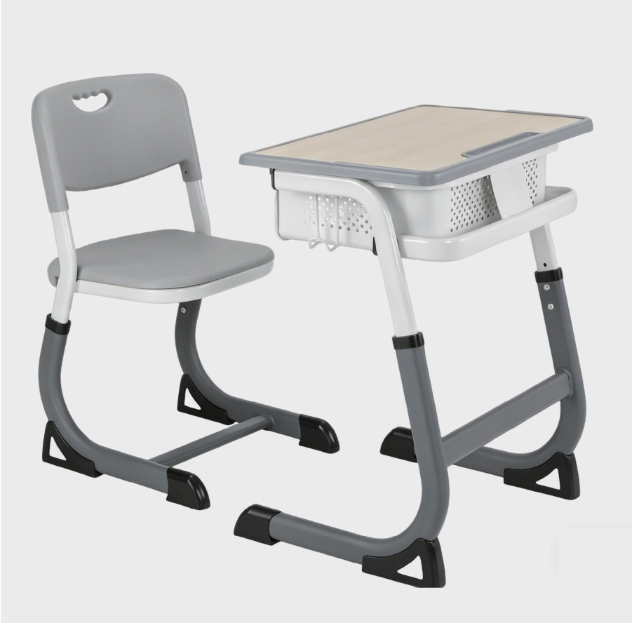
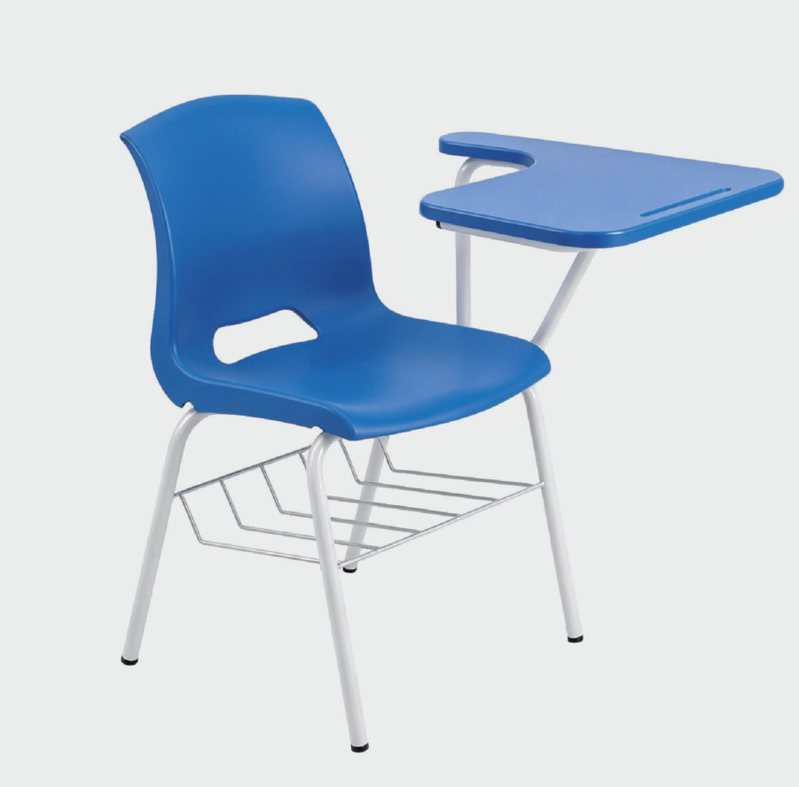
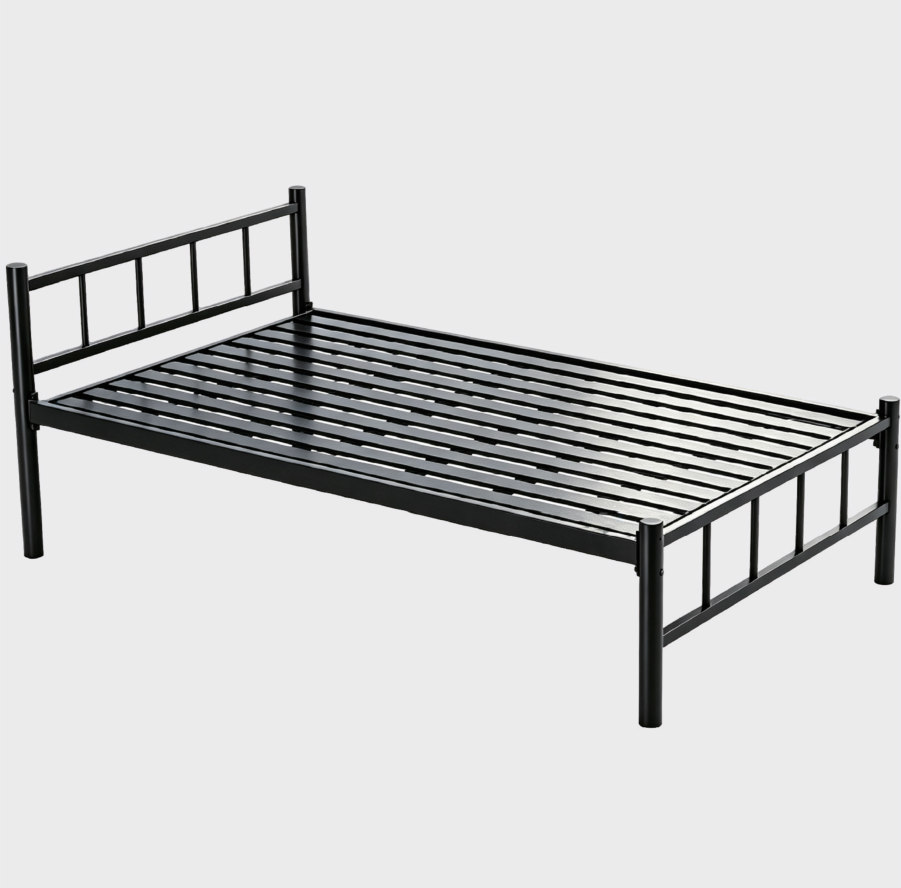
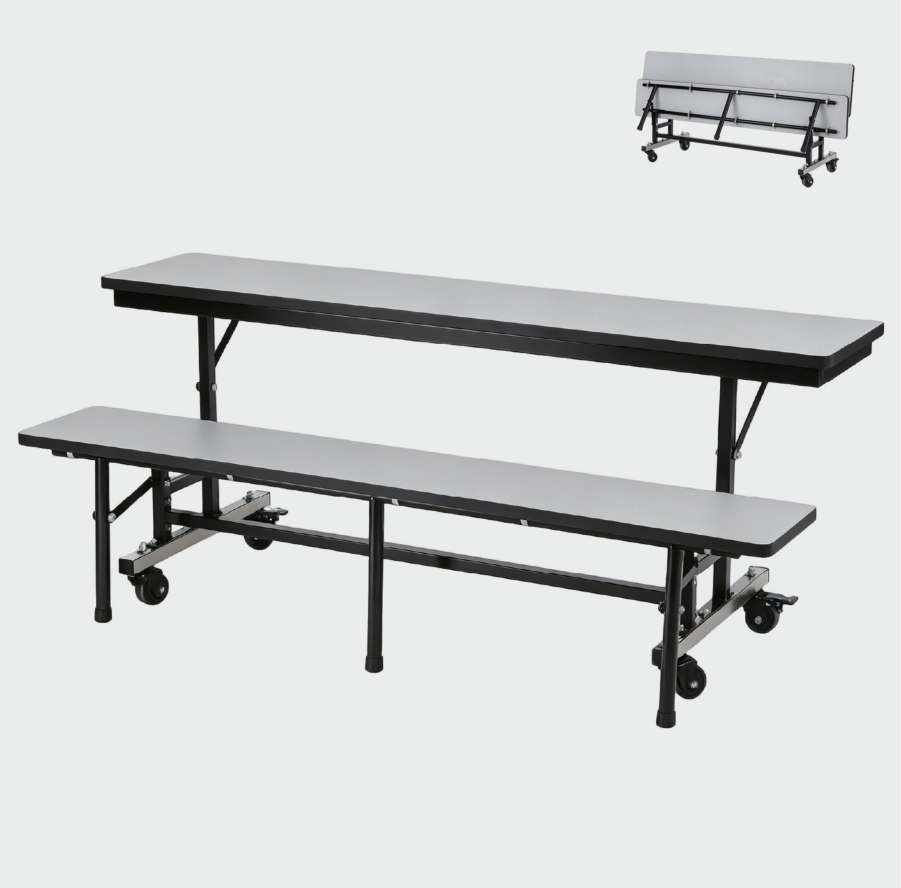
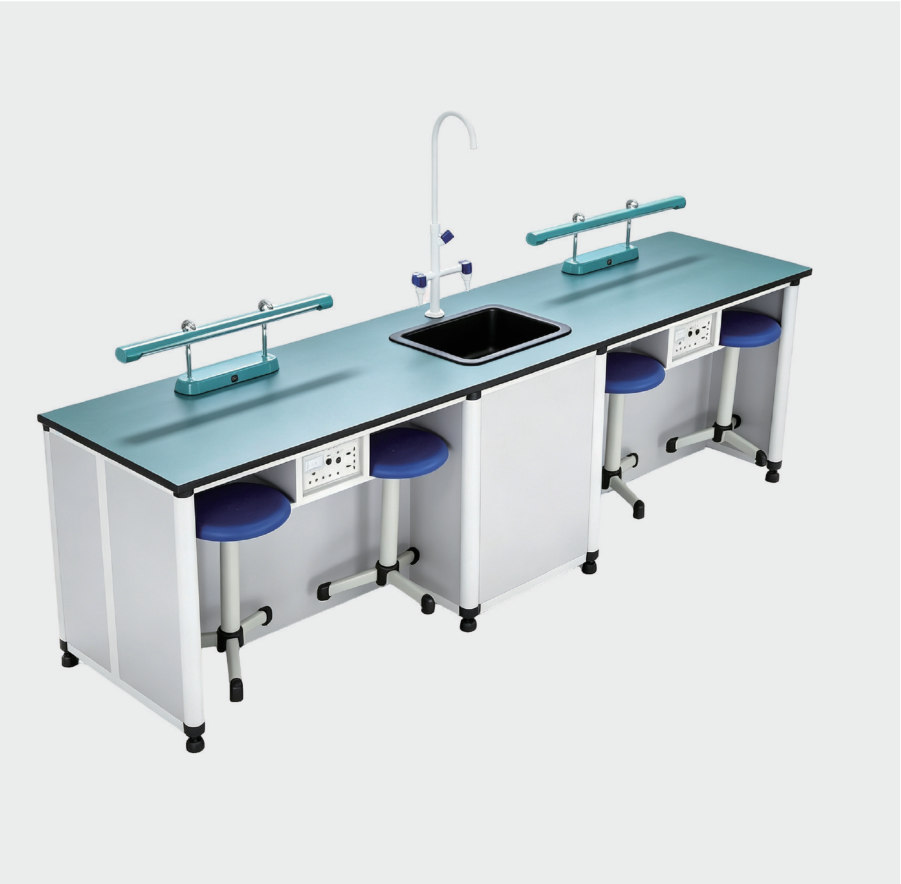
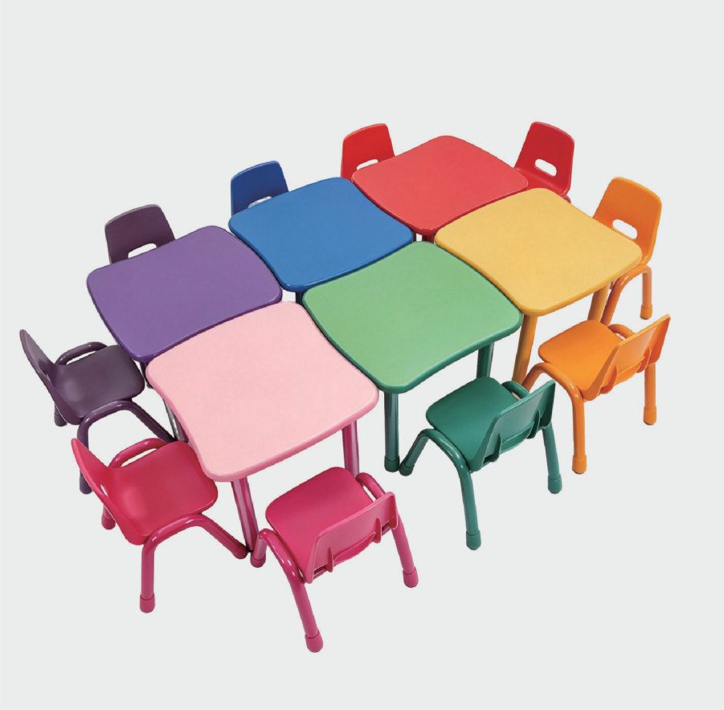

افتح الأصل ↗
افتح الأصل ↗WangLi | مُصنِّع أثاث مدرسي في الصين
أثاث مدرسي للموزعين وشركات التوريد


WANGLI · الشهادات والوثائق
شهادات المصنع ووثائق المنتجات
شهادات نظم الإدارة وسلسلة الحيازة ووثائق المنتجات. افتح النسخ الأصلية وراجع نطاقها لملف التوريد أو المناقصة.
افتح الأصل ↗ افتح الأصل ↗
افتح الأصل ↗ افتح الأصل ↗
افتح الأصل ↗ افتح الأصل ↗
افتح الأصل ↗ افتح الأصل ↗
افتح الأصل ↗ افتح الأصل ↗
افتح الأصل ↗ افتح الأصل ↗
افتح الأصل ↗ افتح الأصل ↗
افتح الأصل ↗شهادات ISO تخص نظم الإدارة، وFSC حسب النطاق والطلب. وثائق المنتجات تخص الموديلات المدرجة وملاحقها؛ تُراجع الحالة الحالية والمطابقة لمتطلبات مشروعك قبل اعتماد الملف.
 افتح الأصل ↗النطاق والتفاصيل ←
افتح الأصل ↗النطاق والتفاصيل ←ما مسار التوريد المناسب لك؟
01
للموزعين وتجار الجملة
قارن المنتجات والخامات، وحدد الكمية والألوان ووجهة الشحن لإعداد طلب شراء بالجملة.
02
لشركات التوريد المشاركة في المناقصات
ابدأ بجدول الكميات والمواصفات الفنية، ثم راجع المنتجات بندًا بندًا قبل تقديم عرضك.
اختيارات من الكتالوج
تشكيلة أوسع للموزعين ومشاريع المدارس

طاولات وكراسي مدرسية

كراسي محاضرات مع لوح كتابة

أثاث السكن الطلابي

طاولات وكراسي المقاصف المدرسية

أثاث المختبرات المدرسية

أثاث رياض الأطفال
منتجات مختارة من مجموعة WangLi

طقم طاولة وكرسي مدرسي بسطح HPL

طقم طاولة وكرسي مدرسي بسطح ABS

كرسي محاضرات مع لوح كتابة HPL
WangLi · أثاث للمساحات التعليمية
شركة Zhejiang Wangli Teaching Equipment متخصصة في الأثاث المدرسي، وتجمع بين التصميم والتطوير والإنتاج. تأسست في مدينة ليشوي بالصين عام 2008، وفق نبذة الشركة في الكتالوج.
تغطي المجموعة الفصول وقاعات التدريب والسكن والمقاصف والمرافق التعليمية، لمساعدة الموزعين وشركات التوريد على تنسيق احتياجات المشروع.
خبرة تصدير إلى أسواق متعددة
من الخليج إلى أسواق عربية وأفريقية
سبق لنا التصدير إلى اليمن والمملكة العربية السعودية وعُمان والإمارات العربية المتحدة والعراق وسوريا وليبيا والصومال. حدد بلد ومدينة التسليم عند إرسال طلبك.
كتالوج المنتجات والمواصفات
ابدأ بدليل الفئات، ثم انتقل إلى صور التكوينات وجداول المواصفات المتاحة. تؤكد التفاصيل النهائية لكل بند في عرض السعر.
من اختيار المنتج إلى عرض السعر
أرسل متطلبات التوريد
اذكر صفتك: موزع أم شركة توريد مشاركة في مناقصة. أرفق اسم المنتج أو الموديل والكمية وبلد ومدينة التسليم والمواصفات المطلوبة والموعد المستهدف.
تفتح الروابط قنوات التواصل الحالية مع WangLi. يرجى تأكيد وسيلة الرد المفضلة عند إرسال الطلب.
قبل طلب عرض السعر
راجع أدلة شراء وتوريد الأثاث المدرسي، وجهز قائمة بالموديلات والكميات والمواصفات المطلوبة لتسهيل المقارنة.
من المدونة
مقالات تساعدك قبل طلب التوريد

الشراء بالجملة والتوزيع ·
فحص الأثاث المدرسي قبل الشحن: كيف تحدد نطاق المراجعة وتوثق ما بقي مفتوحًا؟
حدد الموديلات ونطاق الفحص والمتطلبات وطريقة توثيق الملاحظات وجهة اتخاذ القرار قبل ترتيب فحص الأثاث المدرسي.
اقرأ المقال
المناقصات وتوريد المشاريع ·
عينات الأثاث المدرسي للمناقصات: كيف تميز عينة التقييم عن عينة الطلب؟
سجّل نوع العينة ومرجع الشرط ونتيجة المراجعة، وميّز عينة التقييم عن أي عينة مطلوبة لاحقًا للطلب.
اقرأ المقال
المناقصات وتوريد المشاريع ·
قطع غيار الأثاث المدرسي: كيف تجهّز قائمة واضحة للاستفسار قبل الشراء؟
اربط كل قطعة برمز الأثاث وإصدار الرسم، وافصل مكونات التجميع عن القطع الإضافية ثم اطلب تأكيد التوافق والتوفر.
اقرأ المقالتعرف على WangLi
من المصنع إلى ملف التوريد
شاهد صور المدخل وورش الإنتاج وصالة العينات. افتح القسم الذي تريد مراجعته، ثم حدّد الموديلات والوثائق المطلوبة لطلبك.


جولة في المصنعالتعبئة والتحميلالشهادات والوثائقاطلب ملفًا لمشروعك